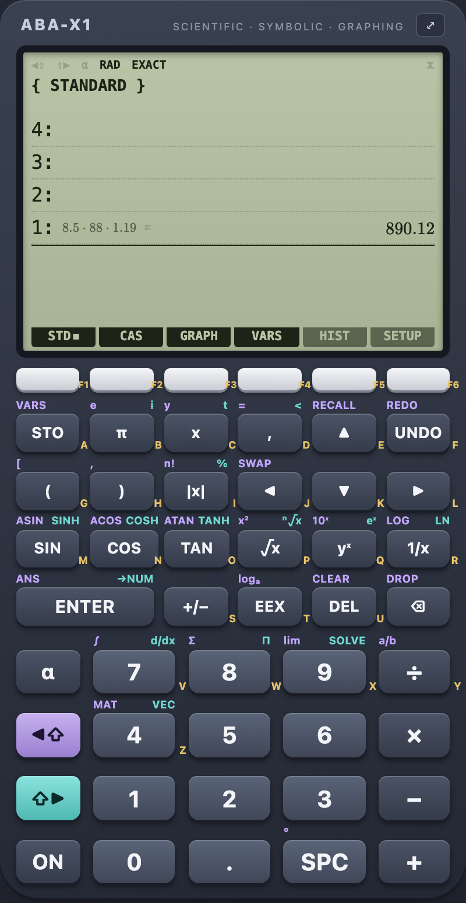

Exact first, decimal underneath
½ stays ½. √8 becomes 2√2.
Type naturally – fractions, roots, powers, integrals – and press ENTER. Every stack level shows what you typed, the exact result and its decimal value. Click a level to edit it and ENTER replaces it in place.
- Degrees or radians, exact or decimal (⌥R ⌥E)
- RPN when you want it: an operator on an empty line works on the stack
- Variables and your own functions:
a = 5,f(x) = x² − 3x + 2
- Evaluate, decimal
- Enter ⇧ Enter
- Edit a level
- click it, or ↑ Enter
